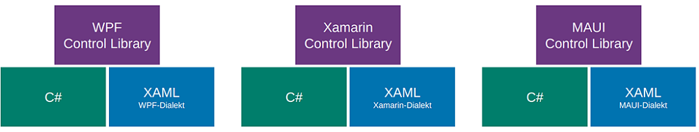
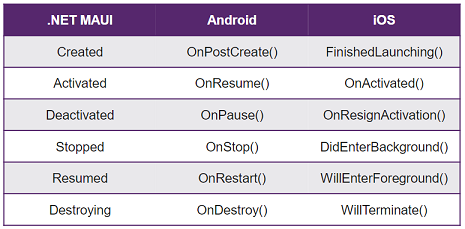

XAML: eXtensible Application Markup Language
XAML Grundlagen : XML basiert, nur in Microsoft (.NET) UI-Framekworks verwendet zur Trennung von Layout und Code. Hierarchisch strukturiert. Vorteile: leichtgewichtig, kurz und gut lesbar, Grafischer Designer inkl. Vorschau, Layout durch spezifische Tools erstellbar. Control Libraries: spezifische SDK Bibliothek für Controls, Layouts, Buttons etc.


Ansicht kann in Visual Studio umgeschaltet werden zwischen Visual Tree (vollständiger Baum der visuell dargestellt wird, enthält sämtliche Knoten) und Logical Tree (Vereinfachung, beinhaltet nur selber definierte Knoten). Namespaces können/müssen im Application Knoten definiert werden:
xxxxxxxxxx<Application xmlns="http://schemas.microsoft.com/dotnet/2021/maui" xmlns:x="http://schemas.microsoft.com/winfx/2009/xaml" xmlns:local="clr-namespace:Vorlesung_08" x:Class="Vorlesung_08.App">
xmlns
ohne Name ist der Standard Namespace. Üblich: Standard = MAUI
Control Library
xmlns:x für XAML-spezifisches
xmlns:local für eigenes Assembly
x:Class ="Vorlesung_09.App" definiert zugehörige Code-Behind Klasse.
Named Elements: x:Name="myElement"Attribut erstellt ein Property in der generierten Klasse,
ermöglicht Zugriff aus Code-Behind. Event Handler:
Methode aus Code Behind kann in XML registriert werden. Parameter object sender
ist das auslösende Control. Argumente enthalten Details zum Event
(abgeleitet von EventArgs). Bessere Alternativen via
VewModel..
xxxxxxxxxx<Button Clicked="Button_OnClicked" Text="Click Me!" />xxxxxxxxxxprivate void Button_OnClicked(object sender, EventArgs args) { /* do something */ }XAML Syntaxen
xxxxxxxxxx<Label Text="Attribute Syntax" TextColor="Red" />
<Label Text="Property Element Syntax"> <Label.TextColor> <Color>Red</Color> </Label.TextColor></Label>Content Properties: Spezielle Eigenschaft kann direkt als Inhalt des XML-Tags geschrieben werden, kann aufwändige Property Element Syntax vereinfachen. Besser Lesbar bei Parent/Child Beziehungen.
xxxxxxxxxx<Label Text="Inhalt" /> oder <Label>Inhalt</Label><VerticalStackLayout> <VerticalStackLayout.Children> <!-- Children ist Content Property von VerticalStackLayout: --> <Label>Inhalt</Label> </VerticalStackLayout.Children> <!-- kann weggelassen werden --></VerticalStackLayout>
Attached Properties:
Setzen einer Eigenschaft auf einem Element, welche zu einem anderen
(meist Eltern-) Element gehört. Pendant in Android die layout_ Attribute.
xxxxxxxxxx<Grid> ... <Label Grid.Row="0" x:Name="Test"></Label></Grid>Type Converters: Werden verwendet, um im XAML aus meist String-Eingaben verschiedene komplexere Elemente zu parsen (Location, Brush, Color, etc.). Viele Converters sind im .NET Community Toolkit enthalten.
xxxxxxxxxx<local:LocationControl Center="10, 20" />xxxxxxxxxxpublic class LocationControl : Label{ public Location Center { set => this.Text = $"{value.Lat} / {value.Long}"; }}xxxxxxxxxx[TypeConverter(typeof(LocationConverter))]public class Location{ public double Lat { get; set; } public double Long { get; set; }}xxxxxxxxxxpublic class LocationConverter : TypeConverter{ public override object ConvertFrom(ITypeDescriptorContext context, CultureInfo culture, object value) { // Zur Kürzung des Beispiels auf Checks verzichtet: // - Ist value wirklich ein string? Enthält das Array exakt 2 Elemente? // - Sind die strings zu double konvertierbar? var valueAsString = (string) value; var valueArray = valueAsString.Split(','); return new Location { Lat = Convert.ToDouble(valueArray[0]), Long = Convert.ToDouble(valueArray[1]) }; }}
Markup Extensions
erlauben Logik in XAML, häufig für Styling oder Data Binding
verwendet. Auch eigene Extensions möglich. Aufzurufende Funktion
innerhalb { }
xxxxxxxxxx<Label Text="Mein Text" FontFamily="{x:Null}" /><Label Text="{local:LocationExtension Lat=10,Long=20}" />xxxxxxxxxxpublic class LocationExtension : IMarkupExtension<string>{ public string Latitude { get; set; } public string Longitude { get; set; } public string ProvideValue(IServiceProvider sp) => Latitude + " / " + Longitude; object IMarkupExtension.ProvideValue(IServiceProvider sp) => ProvideValue(sp);}GUI-Grundelemente
Basisklassen bieten schrittweise weitere Funktionalität an alle von ihnen ableitenden Klassen an.

Grundlegender Aufbau einer Seite (--> enthält 1 oder mehrere von)

Application: MainPage definiert ersten angezeigten Screen, erzeugt und verwaltet Fenster. Verarbeitung von Lifecycle Events in überschreibbaren Methoden (für alle Fenster). Zentrale Verwaltung von app-weiten XAML Ressourcen.
Window:
Definiert ein einzelnes Fenster inkl. Lifecycle Methoden, zum
Überschreiben ist eine eigene Ableitung von Window nötig. Weitere
Fenster werden via Application erzeugt: Application.Current.OpenWindow(window);
Events: Created, Activated, Deactivated, Stopped, Resumed, Destroying
Lifecycle: Events können im Window oder reduziert in Application verarbeitet werden.

Grau: Nicht im Memory geladen.

Pages
Elemente zur Strukturierung und Gestaltung von Screens. Verschachtelung üblich. Content Page (leer), Flyout Page (Benötigt NavigationPage für korrekte Darstellung. Seitlich "einfliegende" Content Page), Navigation Page (Titel Bar mit Back Button), Tabbed Page (Vereint mehrere ContentPages mittels Tab Navigation)
Navigation
Modal: Vordefinierte Abfolge von Fenstern, kann nicht einfach
geschlossen werden
Modeless: Navigation Stack, User kann jederzeit zurück navigieren. NavigationPage benötigt.
Varianten: Application.MainPage, Austausch der angezeigten Page (nur sehr einfache Apps). NavigableElement.Navigation (s.oben, modeless oder modal), Shell (Navigation mittels URIs)
Layouts
Sind Container für Kind-Elemente => Composite Design Pattern.
Verschachtelung möglich (analog Android).
Zur Ausrichtung von Kind-Elementen im Layout wird HorizontalOptions und VerticalOptionsverwendet. Varianten sind Start(links/oben), Center(zentriert), End (rechts/unten), Fill
(Platz füllen, Standard). Layouts berücksichtigen
Kultureinstellungen wie Left-to-Right/Right-To-Left Text.
StackLayout: Horizontal- oder VerticalStackLayout möglich. "StackLayout" ist veraltet.
FlexLayout: Wie Stack aber mit Wrapping und mehr Gestaltungsmöglichkeiten. Direction="[Row|Column]", Wrap="Wrap", JustifyContent, AlignItems zur Verteilung der Items auf beiden Achsen.
Grid: Flexibles, verbreitetes Layout mit Zeilen und Spalten. Sehr
mächtig. Grössen: 1*, 2*, 3* = relative Einheiten. einmalig * vergeben für "brauche restlich verfügbaren Platz". auto wie Android wrap_content
(Achtung Overhead, Koordination durch Elternlayout). Mehrere
Elemente in der selben Zelle werden auf der z-Axis gestapelt (=>
gut für Background Image). Weitere Werte sind Row/ColumnSpacing(Abstand), Row/ColumnSpan(Verbundene Zellen).
AbsoluteLayout: Gut für Overlays, Karten mit Controls etc. Absolute (selten) oder
proportionale Werte (in Prozent vom Elternelement, zw. 0.0-1.0).
Wertetypen sind Kombinierbar.
Views
Auch Controls oder Widgets. Sind Elemente, die für den Benutzer "interagierbar" sind. MAUI bildet diese via Handlers auf Plattform-native Views ab.
| Typ | Beispiele |
|---|---|
| Darstellung | Label, Image, Border, Frame, ScrollView, ... |
| Eingaben | Entry, CheckBox, Slider, Switch, ... |
| Aktionen | Button, ImageButton, SearchBar, ... |
| Aktivitätsanzeige | ActivityIndicator und ProgressBar |
| Collections (W11) | Picker, ListView, CarouselView, TableView, ... |
Grössenangaben:
in MAUI immer Device-Independent Units. Relative Werte ohne Einheit,
Umrechnung auf plattformspezifische Werte bei Ausführung. Sind nur Wünsche
an die Rendering-Engine (Minimum- / MaximumHeightRequest). Ohne
Grössenangabe wird View "so gross wie nötig" bzw. wie in
Android wrap_content dargestellt.
Margin und Padding:
Pages haben Padding, Layouts und Views Margin und Padding. Mögliche
Werte sind all / horizontal,vertical / l,t,r,b